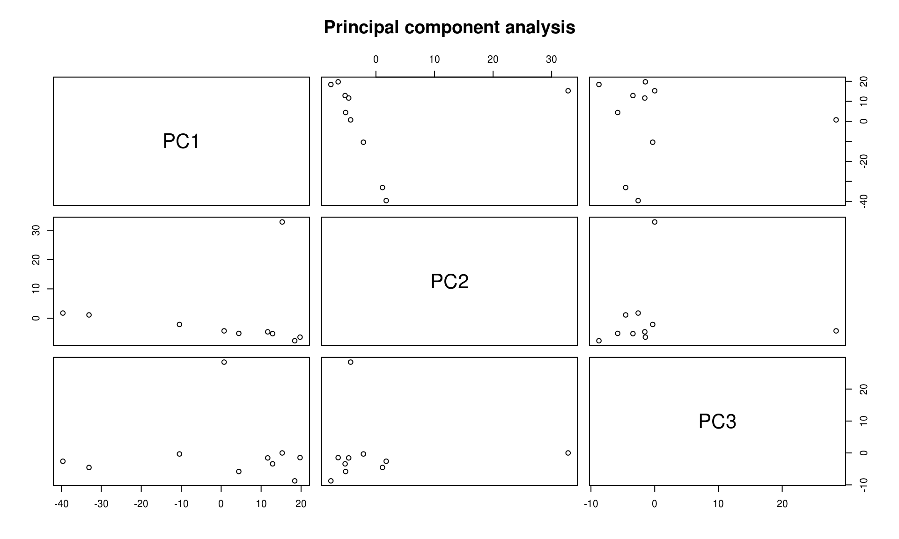
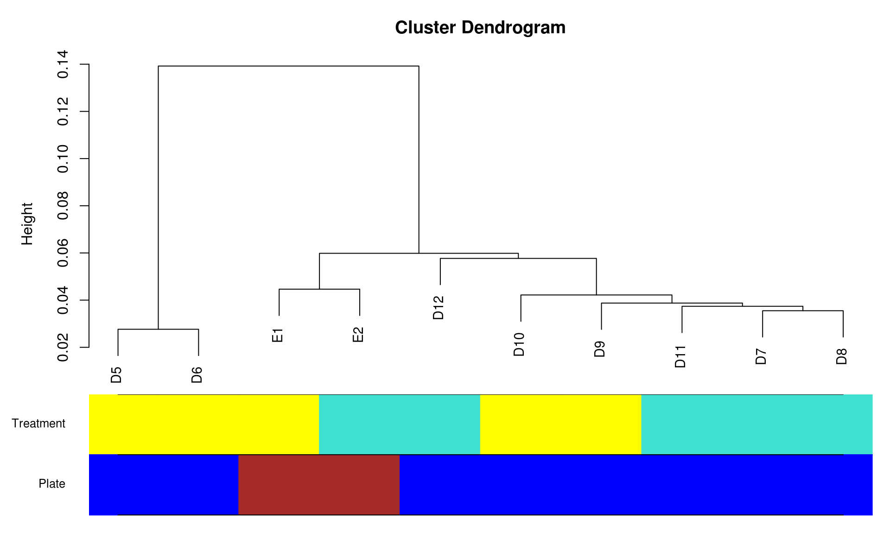
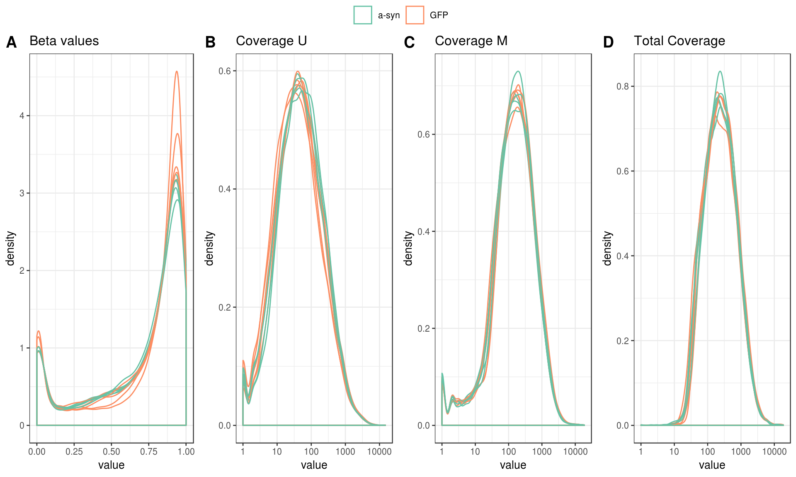
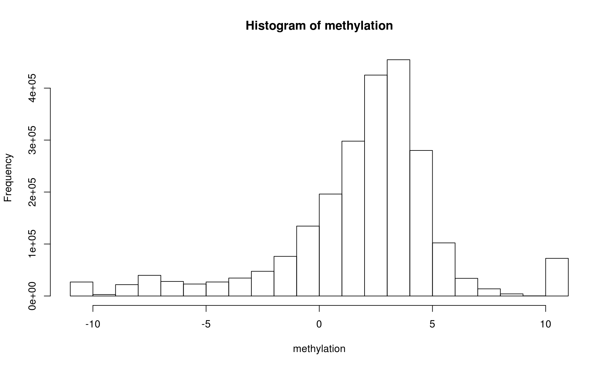
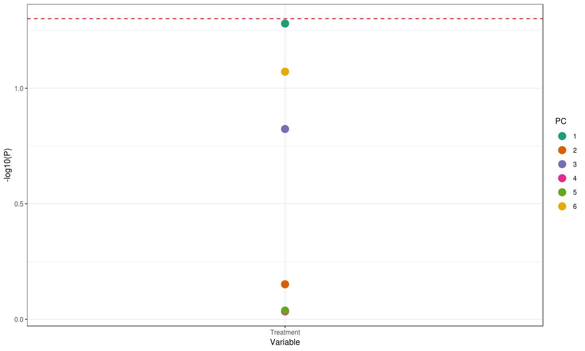
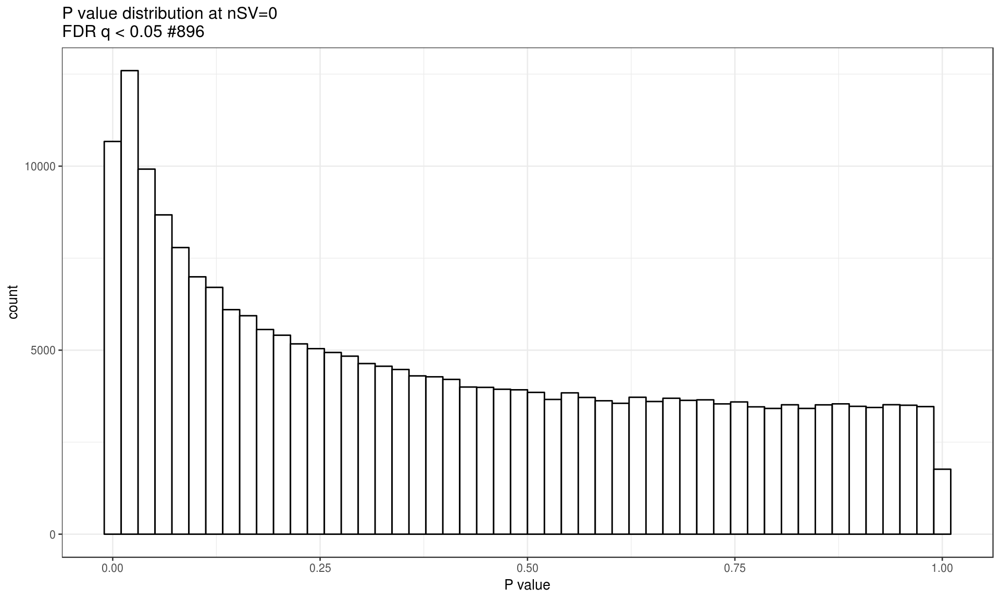
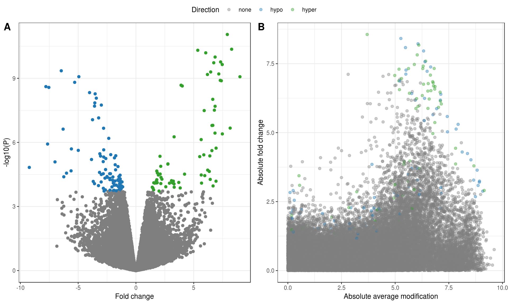

Mice Cecal Patch, Padlocks
Parameters
## {
## "host": "DL560",
## "nPerm": 40,
## "workers": 41,
## "outliers": {
## "thresholdSD": 3,
## "noOfPCs": 2,
## "removeOutliers": true,
## "shape": "Group"
## },
## "clustering": {
## "groups": ["Treatment", "substr(ID, 1, 1)"],
## "addClustersToModel": 0
## },
## "normalization": {
## "normalize": false,
## "plotColor": "Treatment"
## },
## "imputation": {
## "imputeBetas": false,
## "imputeCounts": false
## },
## "model": {
## "formula": "~ Treatment + .",
## "formula0": "~ . - Treatment",
## "contrasts": {},
## "svRange": [1, 2, 3, 4],
## "nsv": 0
## }
## }Data
From directory “Mice_Padlock_1262019”.
Analysis
Outlier identification

| ID | Cohort | MouseNo | Sex | Genotype | Treatment |
|---|---|---|---|---|---|
Outliers have been removed.
[1] “untouched tables: genome”
Sample clustering
Hierarchical clustering using correlations as similarity measure and Ward linkage.

Normalization
Signal density before normalization

No normalization performed.
Covariates
Covariates used in subsequent models
## [1] "Treatment"Are any of the covariates related to the variable of interest? (Assuming that the first variable in modelData is the one of interest).
##
## Call:
## glm(formula = formula, family = "binomial", data = data$modelData)
##
## Deviance Residuals:
## Min 1Q Median 3Q Max
## -1.177 -1.177 0.000 1.177 1.177
##
## Coefficients:
## Estimate Std. Error z value Pr(>|z|)
## (Intercept) -2.313e-17 6.325e-01 0 1
##
## (Dispersion parameter for binomial family taken to be 1)
##
## Null deviance: 13.863 on 9 degrees of freedom
## Residual deviance: 13.863 on 9 degrees of freedom
## AIC: 15.863
##
## Number of Fisher Scoring iterations: 2Robust lmFit
50% stable (5 out 10), non extreme change, M values, robust limma eBayes
methylation <- data$beta
prefix <- "m6_"
modelparams <- list(
allowStable = 0.5,
useMvalues = TRUE,
fixInfinity = 0.001, # Fraction of change for 0% and 100% methylated locations
downloadDataMatrix = TRUE
)Removal of non-informative loci
Fraction of CGs that should be removed depending on threshold. Currently set threshold is 50%
Removing 16637 stable loci.
Conversion of Beta values to M values
Beta values were converted to M values.

Data download
Download data file.
Data PCs vs Covariates
Fit covariates to the PCs using limma
## Removing intercept from test coefficients| logFC | AveExpr | t | P.Value | adj.P.Val | B | |
|---|---|---|---|---|---|---|
| PC1 | 259.437005 | 0 | 2.3538079 | 0.0443575 | 0.3707902 | -4.524978 |
| PC6 | -157.593876 | 0 | -2.0327170 | 0.0741580 | 0.3707902 | -4.541608 |
| PC3 | 143.621685 | 0 | 1.6459512 | 0.1358434 | 0.4528113 | -4.562539 |
| PC2 | 46.521895 | 0 | 0.4048997 | 0.6954623 | 1.0000000 | -4.616553 |
| PC7 | -28.234783 | 0 | -0.3095164 | 0.7643152 | 1.0000000 | -4.618424 |
| PC9 | -17.105584 | 0 | -0.2130156 | 0.8362910 | 1.0000000 | -4.619827 |
| PC8 | 14.600679 | 0 | 0.1615540 | 0.8753981 | 1.0000000 | -4.620368 |
| PC5 | 10.547761 | 0 | 0.1111480 | 0.9140561 | 1.0000000 | -4.620755 |
| PC4 | -9.747595 | 0 | -0.1007207 | 0.9220870 | 1.0000000 | -4.620817 |
| PC10 | 0.000000 | 0 | 0.0000000 | 1.0000000 | 1.0000000 | -4.621103 |
The covariates significantly affecting the PCs using ANOVA:

Select the number of SVs
All known covariates are regressed from data and PCA of residuals is computed. The number of PCs that explain more than 5% of variability is used as the desired number of SVs.
## Number of SVs specified in parameters is 0Probe-level models
P value distribution

Volcano plot

Manhattan plot

Enrichment
## NULLDownload
SessionInfo
## R version 3.5.1 (2018-07-02)
## Platform: x86_64-pc-linux-gnu (64-bit)
## Running under: CentOS Linux 7 (Core)
##
## Matrix products: default
## BLAS/LAPACK: /opt/intel/compilers_and_libraries_2018.2.199/linux/mkl/lib/intel64_lin/libmkl_rt.so
##
## locale:
## [1] LC_CTYPE=C LC_NUMERIC=C
## [3] LC_TIME=en_US.UTF-8 LC_COLLATE=en_US.UTF-8
## [5] LC_MONETARY=en_US.UTF-8 LC_MESSAGES=en_US.UTF-8
## [7] LC_PAPER=en_US.UTF-8 LC_NAME=C
## [9] LC_ADDRESS=C LC_TELEPHONE=C
## [11] LC_MEASUREMENT=en_US.UTF-8 LC_IDENTIFICATION=C
##
## attached base packages:
## [1] parallel stats graphics grDevices utils datasets methods
## [8] base
##
## other attached packages:
## [1] doSNOW_1.0.16 snow_0.4-3 itertools_0.1-3
## [4] iterators_1.0.10 limma_3.38.3 impute_1.56.0
## [7] WGCNA_1.66 fastcluster_1.1.25 dynamicTreeCut_1.63-1
## [10] glue_1.3.0 foreach_1.4.4 ggpubr_0.2
## [13] magrittr_1.5 plotly_4.8.0 ggplot2_3.1.0
## [16] dplyr_0.7.8 data.table_1.12.0 kableExtra_1.0.1
## [19] knitr_1.21 pacman_0.5.0 shiny_1.2.0
##
## loaded via a namespace (and not attached):
## [1] matrixStats_0.54.0 fit.models_0.5-14 robust_0.4-18
## [4] bit64_0.9-7 doParallel_1.0.14 webshot_0.5.1
## [7] RColorBrewer_1.1-2 httr_1.4.0 tools_3.5.1
## [10] backports_1.1.3 R6_2.3.0 rpart_4.1-13
## [13] Hmisc_4.2-0 DBI_1.0.0 lazyeval_0.2.1
## [16] BiocGenerics_0.28.0 colorspace_1.4-0 nnet_7.3-12
## [19] withr_2.1.2 tidyselect_0.2.5 gridExtra_2.3
## [22] preprocessCore_1.44.0 bit_1.1-14 compiler_3.5.1
## [25] rvest_0.3.2 Biobase_2.42.0 htmlTable_1.13.1
## [28] xml2_1.2.0 labeling_0.3 scales_1.0.0
## [31] checkmate_1.9.1 mvtnorm_1.0-8 DEoptimR_1.0-8
## [34] robustbase_0.93-3 readr_1.3.1 stringr_1.3.1
## [37] digest_0.6.18 foreign_0.8-71 rmarkdown_1.11
## [40] rrcov_1.4-7 base64enc_0.1-3 pkgconfig_2.0.2
## [43] htmltools_0.3.6 highr_0.7 htmlwidgets_1.3
## [46] rlang_0.3.1 rstudioapi_0.9.0 RSQLite_2.1.1
## [49] bindr_0.1.1 jsonlite_1.6 acepack_1.4.1
## [52] GO.db_3.7.0 Formula_1.2-3 Matrix_1.2-15
## [55] Rcpp_1.0.0 munsell_0.5.0 S4Vectors_0.20.1
## [58] stringi_1.2.4 yaml_2.2.0 MASS_7.3-51.1
## [61] plyr_1.8.4 grid_3.5.1 blob_1.1.1
## [64] ggrepel_0.8.0 promises_1.0.1 crayon_1.3.4
## [67] lattice_0.20-38 cowplot_0.9.4 splines_3.5.1
## [70] hms_0.4.2 pillar_1.3.1 codetools_0.2-16
## [73] stats4_3.5.1 evaluate_0.12 latticeExtra_0.6-28
## [76] httpuv_1.4.5.1 gtable_0.2.0 purrr_0.3.0
## [79] tidyr_0.8.2 assertthat_0.2.0 xfun_0.4
## [82] mime_0.6 xtable_1.8-3 later_0.7.5
## [85] pcaPP_1.9-73 survival_2.43-3 viridisLite_0.3.0
## [88] tibble_2.0.1 AnnotationDbi_1.44.0 memoise_1.1.0
## [91] IRanges_2.16.0 bindrcpp_0.2.2 cluster_2.0.7-1